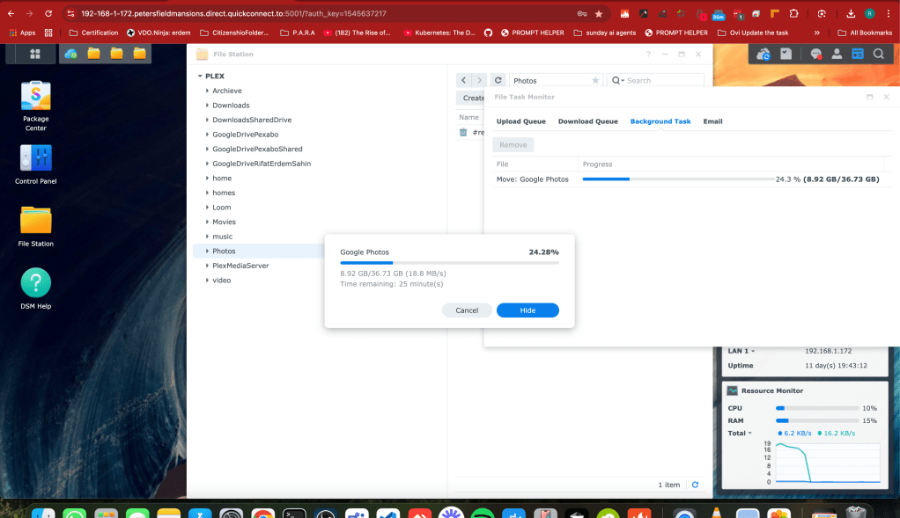

🚀 Bulk Move Files on Synology NAS for Cloud Storage Management
Managing cloud storage effectively can be challenging, especially when you have large files or extensive libraries of data. That's where a Synology NAS (Network Attached Storage) device comes to the rescue! In this post, I'll walk you through how to bulk move files using Synology NAS, a powerful tool that offers a centralized way to organize, store, and move files seamlessly. This setup can help you save time and keep your cloud storage organized. Let’s dive in!
🎯 Why Bulk Move Files?
Whether it's documents, photos, videos, or work files, manually transferring items one by one can be time-consuming and prone to errors. A Synology NAS provides you with the flexibility to:
-
🌐 Easily manage cloud storage by keeping files organized in bulk.
-
📂 Save bandwidth and prevent repetitive downloads/uploads.
-
🔒 Protect data by managing backups automatically to multiple cloud services.
📋 Prerequisites
Before we start, make sure you have:
-
A Synology NAS device with DSM (DiskStation Manager) software installed.
-
Cloud Sync or Hyper Backup installed on your NAS (available in Package Center).
-
Active cloud storage accounts (e.g., Google Drive, Dropbox, OneDrive, or Amazon S3).
🛠️ Steps to Bulk Move Files on Synology NAS
Step 1: Setting Up Your Cloud Sync
-
Open DSM on Synology NAS by entering the IP address of your NAS in your web browser.
-
Go to Package Center and install Cloud Sync.
-
Launch Cloud Sync and connect it to your cloud storage account. You’ll need to authorize Synology NAS to access your cloud service.
-
Choose the local NAS folder and the cloud storage folder you want to sync.
💡 Tip: Set up multiple cloud connections to easily bulk transfer files to different cloud accounts from one central hub!
Step 2: Creating Bulk Move Folders
-
Organize files locally on your NAS by creating separate folders for each cloud storage account.
-
Drag and drop files into these designated folders, so you have all files intended for cloud storage in one place.
Step 3: Configuring Sync and Scheduling
-
In Cloud Sync, select the folder you created and configure sync settings.
-
Choose sync type based on your needs:
-
Upload local changes only: To move files to the cloud without syncing back.
-
Bidirectional sync: To keep both NAS and cloud up to date.
-
Schedule the sync operation to run at a specific time or continuously.
🕰️ Pro Tip: If you have a large volume of files, set a low-traffic time to avoid delays or lag.
Step 4: Monitoring Your File Transfers
To ensure files are transferring correctly, open Cloud Sync and check the status of each sync job. You'll see which files are still moving, have finished, or encountered errors.
Step 5: Automation and File Organization
Set up automated rules for file sorting within DSM to keep files organized once they’re transferred. For example:
-
Use File Station to move files to specific folders by type, name, or date.
-
Organize files into subfolders based on your project or team.
By setting up automation, you can keep your files in order, which makes locating and retrieving them from cloud storage much faster.

🌟 Additional Tips
-
Consider Hyper Backup if you want to create backup versions instead of just syncing files.
-
Encrypt sensitive files before syncing if you're handling sensitive or personal information.
-
Check storage quotas on your cloud provider regularly to avoid running out of space.
🔗 Connect with me:
I'd love to hear how you use Synology NAS for managing cloud storage! Share your experiences, tips, or questions.
-
💼 LinkedIn: Connect on LinkedIn
-
🐦 Twitter: Follow me on Twitter
-
🎥 YouTube: Watch my Tutorials
-
💻 GitHub: View my Projects
Happy file organizing! 📁✨
Imported from rifaterdemsahin.com · 2024